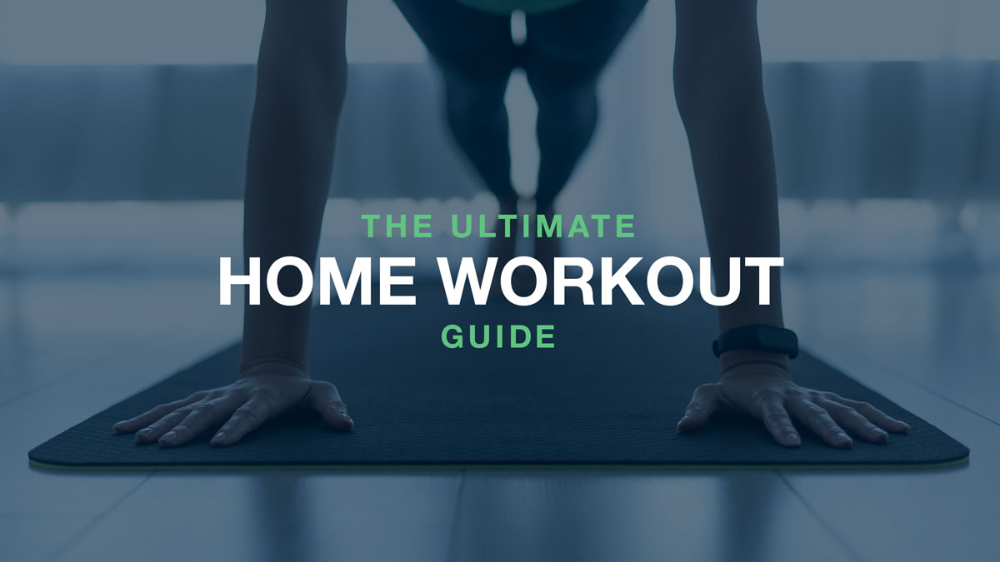
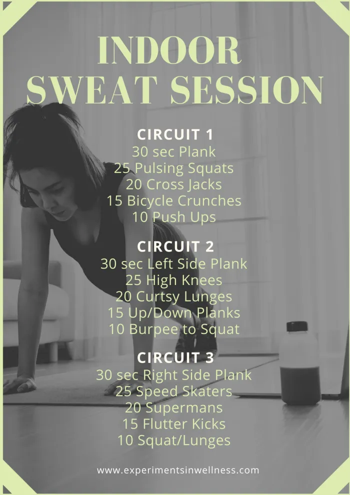

Gain Free Fitness Knowledge HERE Today
Regular exercise and physical activity promotes strong muscles and bones.
It improves respiratory, cardiovascular health, and overall health.
Staying active can also help you maintain a healthy weight, reduce your risk for type 2 diabetes, heart disease, and reduce your risk for some cancers.
Why is Fitness Important for Life
Regular exercise or physical activity helps with a person's mental well-being and improves the physical fitness of the body, which causes their to be a reduced risk of developing diseases, such as:
CardioVascular Diseases
Specific Cancers
Type 2 Diabetes
Injury from Future Activities
High Blood Pressure
High Blood Cholesterol
What are the Benefits of Excercising?
Irrespective of human differences, constant physical activity shows immediate and long-term health benefits and improves the overall quality of the life.
Here are a few benefits that will occur with doing regular physical activities:
Reduces the risk of diseases: Physical fitness improves the health of the body by decreasing the risk or severity of diseases,
such as hypertension (high blood pressure), diabetes, high blood cholesterol levels, cardiovascular diseases, obesity, and cancer.
Improves mental health: Regular exercise promotes good mental health by reducing depression, anxiety, and other mood changes.
It improves concentration, thinking, decision-making and self-esteem.
It also helps you get good sleep, which plays a major role in decreasing stress and improving your quality of life.
Increases muscle and bone health: Regular exercise is essential for the development and maintenance of strong muscles and bones.
People lose muscle mass and bone density and function as they age, which increases their risk of injury.
Regular physical exercise promotes the ability of muscles to absorb essential nutrients for growth and prevents muscle loss while preserving strength as people age.
It improves bone density that may help prevent osteoporosis and arthritis.
Increases energy levels: Physical activity reduces the feeling of lethargy because it boosts energy levels and keeps people active.
This increases social interaction, which makes people feel good about themselves and keeps them cheerful.
Decreases the weight of a person:
Being overweight results in several problems, such as internal damage to the organs and joints, decreased enthusiasm in life, and difficulty performing regular activities.
Being fit improves confidence and encourages people to have an active and fun life.
Even though regular excercise is important for your life, as explained above, over excercising can lead to problems. A human cannot constantly over-exceed their limits.
Therefore, refrain from doing so. Here are some risks that may occur if you over-exceed your body:
Increased resting heart rate. This can be horrible because your resting heart rate will higher than the normal amount.
Increased risk of injury. The constant excercise will tire your body and muscles out where there will be a high-rate of injury.
Fatigue. This means that you will tire quicker and your body will take longer to recover.
Can cause you to feel sick. The constant strain on your body will cause you to feel like vomitting, having a fever or cold, or body aches.
Weakened immunity. Because your body is spending so much time trying to recover, your immunity will take second priority

At Home Warm-up routines
Doing warm-up excercises before a workout will make your blood run, therefore it will help prevent possible injuries.
Here are some warm-up excercises that you can do:
Starter Warm-up Excercise
Push-ups: 10 reps * 2
Squats: 15 reps
Plank: 20 secs
Jumping Jacks: 30 reps
Advance Warm-up Routine
Push-ups: 10-20 reps
Squads: 20 reps
Lunges: each leg, 5 reps
Jump rope: 2-3 mins
Jumping Jacks: 20 reps
Hip rotation: 10 reps, clock-wise and anti-clock-wise
Forward and Backward Leg swing: each leg, 10 reps

Best at Home Workout
These home workouts will provide you with the best results:
Plank: 30 secs
Squats: 25 reps
Jumping Jacks: 20 reps
Bicycle crunches: 15 reps
Push-ups: 10 reps
Another Set:
Left-side Plank: 30 secs
High Knees: 25 reps
Lunges: 20 reps
Plank: Up and Down, 15 reps
Burpee to squat: 10 reps
Another Set:
Right-side Plank: 30 secs
Speed skaters: 25 reps
Superman: 20 reps
Flutter Kicks: 15 reps
Squat/Lunge: 10 reps